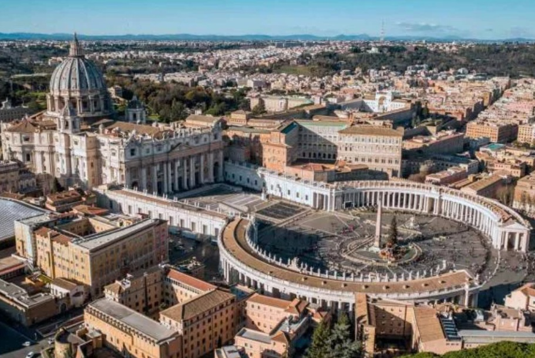
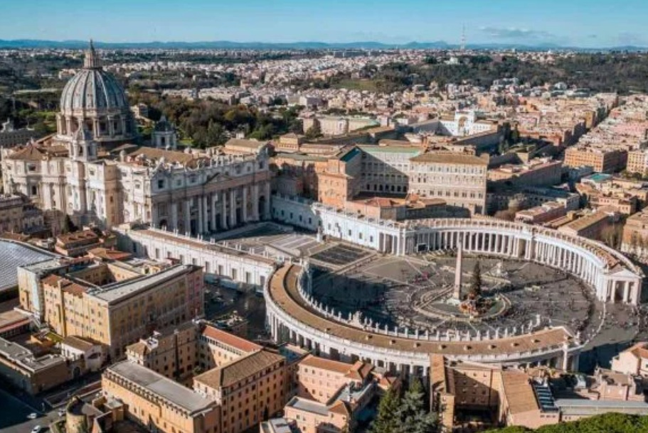

Menú
Contactos
Galería de Imágenes

 


Lugares de Interés
Coliseo Romano
El Coliseo es el anfiteatro más grande jamás construido en la época del Imperio Romano. Conocido por sus espectáculos de gladiadores, este monumento es un símbolo icónico de Roma y una de las Siete Maravillas del Mundo Moderno.
Fontana di Trevi
La Fontana di Trevi es una de las fuentes más famosas del mundo. Su imponente escultura barroca y su tradición de lanzar una moneda para asegurar el regreso a Roma la convierten en un punto imperdible para turistas.
Panteón de Agripa
Construido hace casi 2000 años, el Panteón es un templo romano dedicado a todos los dioses. Su cúpula es una de las más grandes jamás construidas sin refuerzo y su interior alberga las tumbas de personajes históricos como el pintor Rafael.
Ciudad del Vaticano y la Basílica de San Pedro
La Ciudad del Vaticano es el estado más pequeño del mundo y el centro del catolicismo. La Basílica de San Pedro, con su impresionante cúpula diseñada por Miguel Ángel, es uno de los lugares más sagrados y visitados del mundo.
Plaza Navona
Plaza Navona es una de las plazas más hermosas de Roma, famosa por sus fuentes barrocas, restaurantes y ambiente vibrante. Aquí se encuentra la Fuente de los Cuatro Ríos, diseñada por Bernini.